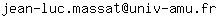

.svg)
Liste des parcours types
Fiabilité et sécurité informatique (FSI)Ingénierie du logiciel et des données (ILD)
Responsable du parcours ILD : Jean Luc MASSAT 
Intelligence artificielle et apprentissage automatique (IAAA)
Informatique et mathématiques discrètes (IMD)
Computational and mathematical biology (CMB)
Géométrie et informatique graphique (GIG)
Objectif
Le master Informatique a pour vocation la formation de professionnels de l'informatique au niveau bac+5. L'objectif est d'offrir aux étudiants un large spectre de compétences et de savoirs afin de rendre accessibles des emplois de haut niveau dans le monde de l'entreprise, ainsi que dans celui de la recherche, ou dans d'autres organisations. La mention informatique offre une palette de six parcours adaptés à plusieurs secteurs de l'informatique. Les diplômés auront donc accès à une grande diversité de métiers et de carrières.
Public visé
Le master s'adresse à des étudiants ayant une licence générale en informatique (ou équivalent). Selon les parcours, les étudiants titulaires d'une licence informatique-mathématiques, voire d'une licence de mathématiques sont également en mesure de suivre la formation.
Conditions d'admission
Vous trouverez plus d'information à cette adresse :
http://masterinfo.univ-mrs.fr/candidature/